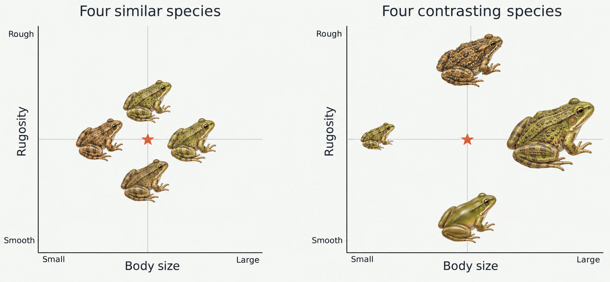
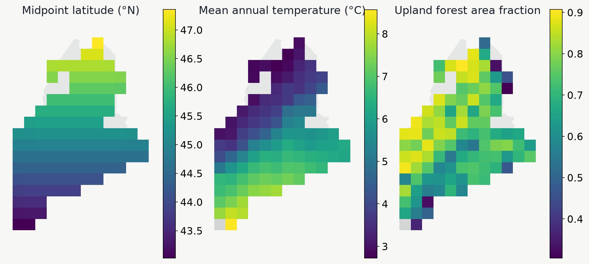
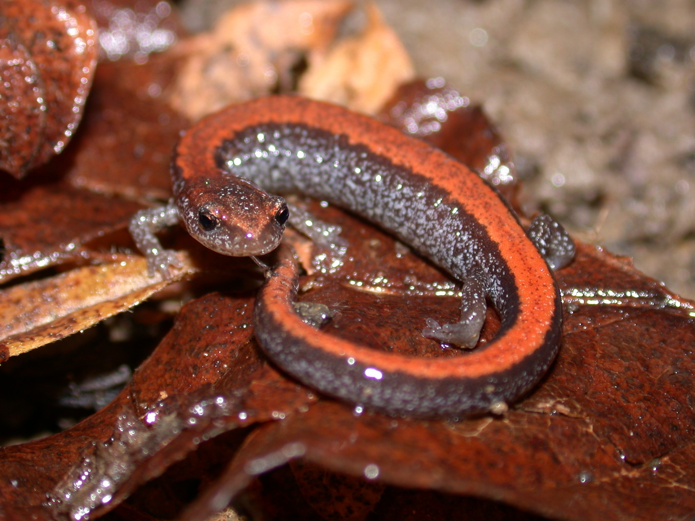
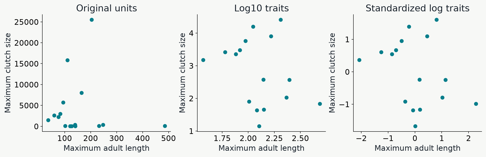
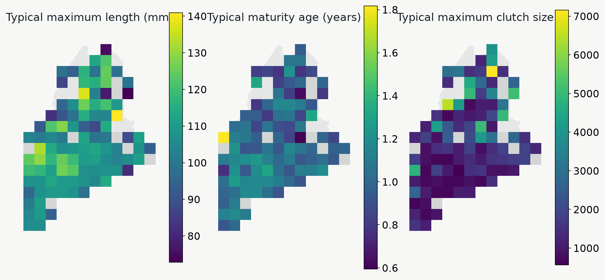
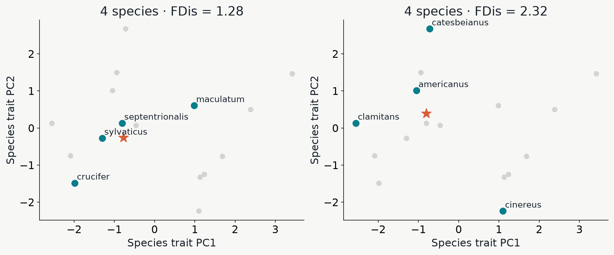
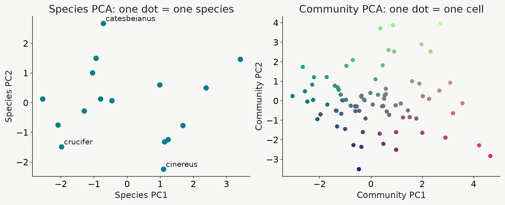
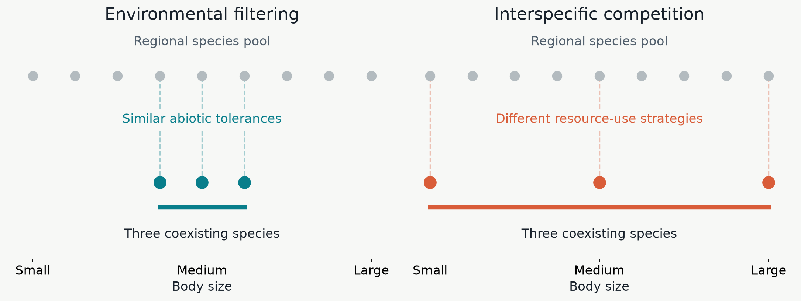
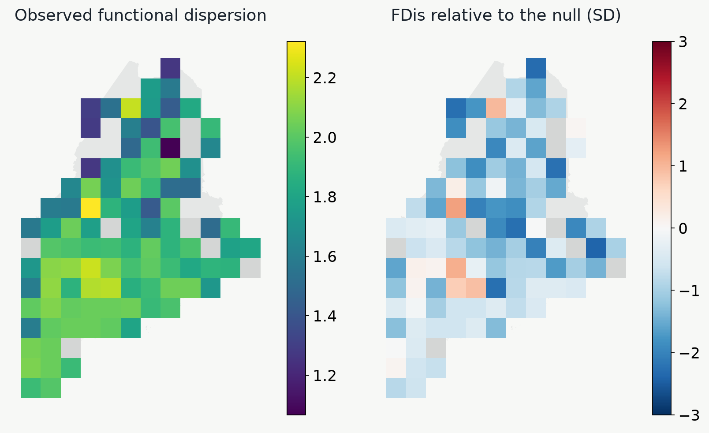
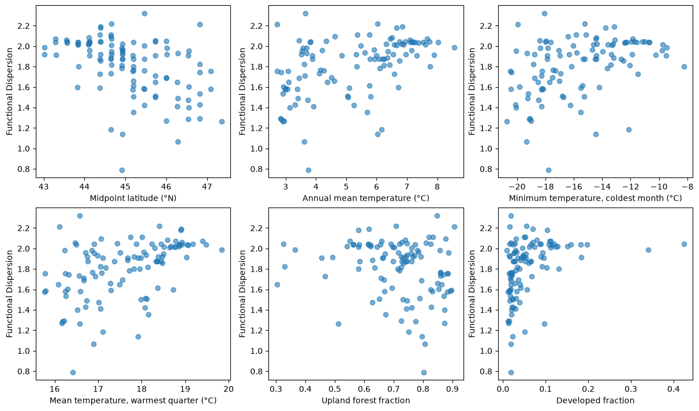

Spatial trait-based ecology
Where do richness and functional diversity disagree? What processes can this tell us about?

Both communities have four species, but one has much higher functional diversity (trait variation).
How does environment and geography influence life history at the species and community level?

Which life-history strategies or traits occur along gradients of latitude, climate, and habitat?
Bergmann's rule: Larger bodied species found in colder environments (true for endotherms).
Five traits describe size, maturity, and reproduction



The trait table gives each species a life-history profile.
Make proportional changes comparable

Log10 makes proportional differences comparable; standardization gives each trait equal variance.
Here each point is a species.
Where do community mean traits change?

Do colder or more disturbed places contain species with different body sizes, maturity ages, or clutch sizes?
Which environmental gradients accompany shifts in mean traits?

Do any of these relationships look meaningful to you? How would you interpret these figures?
Here each point is a community average.
Functional dispersion (FDis) is the mean distance to the multivariate trait centroid
In this cartoon the centroids of these two communities are identical
Species in the community on the right occupy a wider spread of the measured trait space, so it will have a larger FDis value
These two real communities have very different FDis values

The red star indicates the centroid in multivariate trait-space for the given community
PCA applied to species+traits versus communities+trait means

Nearby species have similar trait profiles. Nearby communities contain species with similar average traits.
Filtering favors similarity; competition can favor divergence

Abiotic constraints can favor similar species; resource competition can favor dissimilar coexisting species.
Within each site: Shuffle rows of the trait dataframe; recalculate FDis; repeat 1000x

The distribution of FDis values can be used get a p-value for the observed FDis
Is the observed functional dispersion significantly different from randomized FDis?

The standardized effect size (SES) is (observed FDis - null mean) / null SD.
Negative values indicate clustering; positive values indicate greater spread than expected.
Where is functional dispersion significantly smaller relative to the regional pool?

One might hypothesize that colder climate would impose an environmental filter
How would you interpret the spatial pattern of FDis here?
How does trait dispersion vary with environment?

Each panel relates community trait dispersion (FDis) to environment, latitude, and habitat type
Which gradients track community life-history strategies?

Use the ranking to identify associated gradients and the arrows to see how trait combinations change along them.
How does environment drive similarity in community trait composition?

Similar map colors identify communities with similar combinations of mean life-history traits.